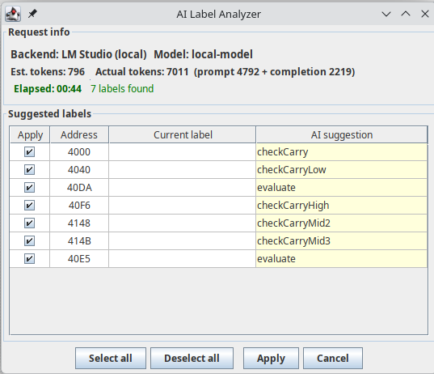
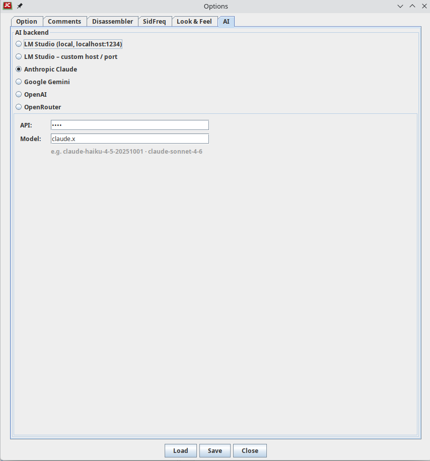

JC64dis AI menu
This menu has functions that uses external AI engine:
- Get labels: the contents of Preview source is sent to the AI asking to determine significative labels name. The result is shown in a windows where you can confirm each single labels to apply.

For using the AI you need to select your OpenAI compatible provider into the option, by inserting youe key and model to use:
